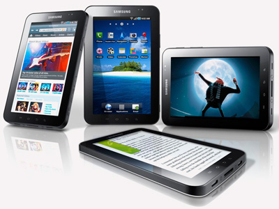
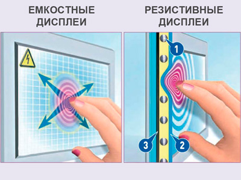

Краткий обзор планшетов


Выпуск компанией Apple планшетного компьютера iPad положил начало новому поколению устройств этого класса. Неоспоримым фактом является то, что iPad, представленный компанией Apple в начале 2010 года, дал толчок возрождению планшетных компьютеров как нового класса электронных устройств. Ведь ранее к числу планшетников в основном относились устройства, построенные на платформе ноутбука и имеющие откидной или встроенный сенсорный дисплей, игравший роль клавиатуры.iPad тоньше и легче ноутбука, он дольше работает от батареи, а управлять им не намного сложнее, чем обычным смартфоном. После включения устройство сразу готово к работе - коснувшись дисплея, можно тут же вызвать любую функцию.
Помимо выполнения обычных офисных задач, таких как работа с электронной почтой и веб-серфинг, ПЛАНШЕТ годится для воспроизведения музыки и видео, чтения электронных книг и газет, просмотра фотографий, а также для игр.
Но после первого выведения на рынок Apple iPad конкуренты сейчас предлагают аналогичные устройства. Однако недавно запущенный в продажу iPad 2 позволил Apple снова вырваться вперед.
Как устроены планшетные компьютеры, какие бывают ПЛАНШЕТНИКИ, для чего они нужны и как работают - расскажем далее.
ПЛАНШЕТ - особенности управленияПланшетные компьютеры оснащены дисплеем с поддержкой технологии Multitouch, благодаря чему управлять устройством можно сразу несколькими пальцами. Сенсорный дисплей реагирует на легкое касание, движение пальцев, а также на жесты. Запускается приложение путем прикосновения к соответствующему значку.
Движения пальцев используются для перехода к следующей странице или фотографии, прокрутки веб-страниц и выполнения определенных операций в играх.
Ввод текста, веб-адресов и адресов электронной почты, печатание заметок и контактных данных производится с экранной клавиатуры. Для набора же больших текстовых документов лучше использовать внешнюю клавиатуру. К ПЛАНШЕТАМ, оснащенным разъемом USB, таким как WeTab или Hanvon TouchPad B10, можно подключить обычную клавиатуру. А у других моделей, например Apple iPad или Samsung Galaxy Tab, подключение производится через Bluetooth или разъем для док-станции.
Дисплейные технологии
- Емкостные дисплеи
В планшетных компьютерах, таких как Apple iPad или Samsung Galaxy Tab, используется емкостный сенсорный дисплей, который позволяет управлять устройством легким касанием экрана, а также движением пальцев. Практически во всех современных планшетниках установлены экраны с поддержкой технологии Multitouch, способные обрабатывать сразу несколько касаний. Например, можно увеличить масштаб веб-страницы или фотографии, просто разведя два пальца в стороны. Таким образом, стилус при использовании емкостного дисплея не нужен.
Однако есть у него и недостатки: жир, грязь и пот, оставляемые пальцами на поверхности дисплея, могут препятствовать управлению, а чтобы пользоваться ПЛАНШЕТОМ зимой на открытом воздухе, придется снять перчатки.

Под стеклянной панелью дисплея расположена сетка, которая образована прозрачными тонкими электродами, подающими на проводящий слой небольшое переменное напряжение. При касании экрана возникает утечка тока. Изменение величины тока регистрируется датчиками, на основании чего определяются координаты точки касания.- Резистивные дисплеи
Сенсорные экраны, использующие резистивную технологию, встречаются гораздо реже. Управлять устройствами с таким дисплеем можно как пальцем, так и стилусом. Главным недостатком сенсорных панелей этого типа является относительно быстрый износ и невысокая прозрачность.
Резистивный сенсорный экран состоит из стеклянной панели и гибкой пластиковой мембраны, пространство между которыми заполнено микроизоляторами (1). При нажатии на экран пальцем или стилусом панель (2) и мембрана (3) замыкаются, и между ними начинает течь слабый ток, что позволяет устройству определить координаты точки касания.
Операционные системы для ПЛАНШЕТНИКОВВ планшете iPad используется операционная система iOS от компании Apple, большинство других моделей работает под управлением Android 2.2 от Google.
Обе системы были разработаны для применения в смартфонах, поэтому они изначально оптимизированы для сенсорного управления устройством.
Существуют, конечно, и другие операционные системы:
- Windows 7 от компании Microsoft не является идеальным решением для маленьких дисплеев планшетных ПК. Чтобы попасть пальцем в крошечные значки и пункты меню, потребуется немало терпения, а зачастую и удачи.
- WeTab OS построена на платформе MeeGo, разработанной компаниями Intel и Nokia. Обладает хорошим потенциалом, но пока еще «сыровата».
- WebOS, анонсированная компанией HP для планшетов собственного производства, находится в разработке и должна появиться в первой половине текущего года.
Более подробную информацию о доступных на данный момент планшетных операционных системах см. в таблице.
|
Вид ОС |
Достоинства |
Недостатки |
Предназначение |
|
Apple iOS |
|
|
|
|
Android 2.2 |
|
|
|
|
Windows 7 |
|
|
|
|
WeTab OS 2 |
|
|
|
Apple iPad работает безупречно, однако не каждому придется по вкусу закрытая система, предполагающая использование программы iTunes и интернет-магазина App Store. Другие системы являются более открытыми, однако обладают недостатками в работе.
- Недостатки
ПЛАНШЕТЫ не являются полноценными компьютерами: так, у многих моделей отсутствуют важные разъемы, ввод больших объемов текста с экранной клавиатуры проблематичен, а установка настольных версий программ на большинстве моделей невозможна. Но есть и достоинства.
- Достоинства
Все операционные системы предлагают функции, типичные для настольных и мобильных компьютеров. Среди них возможность установки приложений, использования веб-сервисов и синхронизации контактов, а также календаря с веб-сервисами (Google, Exchange).
На выставке CES в Лас-Вегасе разработчики представили две новые операционные системы для планшетных компьютеров.
- Android 3
Версия операционной системы от компании Google оптимизирована для планшетных ПК, обладает новым графическим интерфейсом. В отличие от предшественника, ОС разработана специально для планшетных ПК, имеет новый графический интерфейс. Многие производители уже представили ПЛАНШЕТЫ на базе этой системы.
- BlackBerry Tablet OS
Компания RIM разработала ПЛАНШЕТ на базе собственной операционной системы, предлагающей большое количество бизнес-функций. Ранее она была известна, прежде всего, своими смартфонами бизнес-класса, ПЛАНШЕТЫ же для нее - новое направление деятельности.
Для чего нужен ПЛАНШЕТУстройства под управлением Apple iOS и Google Android предлагают ряд классических компьютерных и ноутбучных функций, однако не позволяют работать с настольными версиями таких программ, как Word, Excel или Photoshop Elements.
Пользователи, которые не имели дела с планшетниками, поначалу будут испытывать определенные неудобства, тем более что к некоторым моделям не удастся подключить ни флэшку, ни принтер.
Несомненным достоинством планшетных ПК под управлением iOS и Android является огромное количество компактных приложений и игр, установка которых не составляет труда. Многие из них распространяются бесплатно, цена других не превышает 300 руб.
Помимо стандартных приложений, таких как текстовый и табличный редактор, браузер, почтовый клиент, аудио- и видеоплеер, просмотрщик изображений и служебные программы (календарь, контакты), предлагается множество других приложений, относящихся к самым разным категориям: новости, погода, биржа, финансы, игры, головоломки, планирование поездки, подготовка к сдаче экзамена на водительское удостоверение, химия, физика, медицина, спорт, фитнес, здоровье, виноделие, словари, лекарства, астрономия и способы завязывания галстука и т.д.
На ПЛАНШЕТАХ с операционной системой Windows 7 способны работать обычные компьютерные программы и игры, однако, как правило, они не оптимизированы для сенсорного управления. К тому же модели, построенные на платформе ноутбука или нетбука, зачастую недостаточно мощны для работы с некоторыми приложениями.
Для чего ПЛАНШЕТЫ не годятсяПланшетные ПК не являются высокопроизводительными устройствами. Поэтому они не годятся для редактирования изображений и видео, а также для работы с большими таблицами. К тому же вводить значительные объемы текста с экранной клавиатуры не очень удобно.
Построенные на базе стандартной ноутбучной платформы ПЛАНШЕТЫ под управлением Windows 7, как правило, оснащаются недостаточно производительным графическим процессором, который не отвечает аппетитам большинства современных игр. Владельцев планшетов iPad при веб-серфинге будет раздражать частое сообщение об ошибке: сайты, содержащие flash анимацию, загружаются не полностью.
Да, Apple считает технологию Flash устаревшей и представляющей потенциальную угрозу безопасности. Конечно, мнение авторитетной компании не лишено резона, однако это слабое утешение для интернет-пользователей, которым многие вебсайты будут недоступны.
Где взять приложения для ПЛАНШЕТНИКА и как их установитьПриложения для операционных систем iOS, Android и WeTab OS можно скачать с сайтов специальных интернет-магазинов. Для получения доступа к магазину нужно установить на компьютере соответствующее приложение, например App Store для iOS или Market для Android. Установка выбранных в магазине программ выполняется автоматически, причем использовать их можно сразу, без перезагрузки устройства.
Набор приложений в магазине WeTab Market пока бедноват, причем анонсированная возможность доступа к Android Market отсутствует и по сей день. На планшеты WeTab можно устанавливать и Linux-приложения, вот только запустить их через графический интерфейс не удастся, к тому же они плохо приспособлены для сенсорного управления.
Чем отличаются ПЛАНШЕТЫ- Дисплей
Планшет Samsung Galaxy Tab GT-P1000 оснащен сенсорным дисплеем с диагональю 7 дюймов (178 мм) и разрешением 1024х600 точек. Площадь 9,7-дюймового (246 мм) экрана Apple iPad примерно вдвое больше. Разница особенно заметна при просмотре фильмов, хотя по разрешению дисплея (1024х768 точек) превосходство iPad над Galaxy минимальное.
У большинства планшетных ПК высокая контрастность изображения сохраняется и при просмотре под острым углом. Чего не скажешь о планшете WeTab, который оснащен ноутбучным дисплеем: яркость изображения существенно снижается даже при незначительном изменении угла зрения.
- Операционные системы
Уже рассмотрены выше.
- Процессор
В iPad, Galaxy Tab и некоторых других планшетниках используются специальные процессоры, которые устанавливаются, например, в мобильные телефоны и роутеры. Особенностью таких процессоров на базе архитектуры ARM являются высокая эффективность и низкое энергопотребление.
Модели, которые работают под управлением Windows или Linux, зачастую оснащаются нетбучным или ноутбучным процессором (например, Intel Atom). Из-за более высокого энергопотребления чипа, время автономной работы таких устройств меньше.
- Накопитель
Во многих ПЛАНШЕТАХ установлен флэш-накопитель емкостью от 8 до 64 Гб. При наличии слота для карт памяти объем дискового пространства можно увеличить с помощью флэш-карт формата SD.
В планшетных компьютерах на ноутбучной платформе (например, Hanvon TouchPad B10) для хранения данных зачастую используется жесткий диск.
- Разъемы
Наиболее популярные планшеты iPad и Galaxy Tab снабжены лишь разъемами для наушников и док-станции. Некоторые модели оснащаются USB-портом для подключения жестких дисков, флэш-накопителей, клавиатуры или фотокамеры, а иногда и разъемом для монитора. Беспроводную связь с другими устройствами или Интернетом, как правило, обеспечивает встроенный Bluetooth-адаптер и Wi-Fi-адаптер. Поддержка 3G, предоставляющая возможность мобильного веб-серфинга, встречается не у всех планшетов.
- Функция мобильного телефона
Звонить умеет лишь незначительное число моделей, например Samsung Galaxy Tab. Для разговора может использоваться как кабельная гарнитура, так и функция громкой связи, а благодаря встроенной камере возможно и совершение видеозвонков.
Как загрузить данные на ПЛАНШЕТВладельцам iPad необходимо установить на компьютере программу iTunes: с ее помощью производится настройка планшета, загрузка обновлений для ОС, передача музыки, видео и приложений с ПК, а также синхронизация данных, контактов и календаря.
На планшетных компьютерах под управлением Android синхронизация электронной почты, контактов выполняется посредством веб-сервиса Google Mail. Некоторые производители также предлагают программы для обмена данными с ПК, например Kies для планшетов Samsung.
Обеспечение безопасности данных
iTunes автоматически создает на ПК резервную копию находящихся на iPad данных и приложений. При сбое в работе iPad данные из резервной копии в любое время можно снова загрузить на планшет. Операционная система Android не имеет функции резервного копирования, однако эту задачу можно решить с помощью бесплатных приложений или программ, предлагаемых производителями устройств.